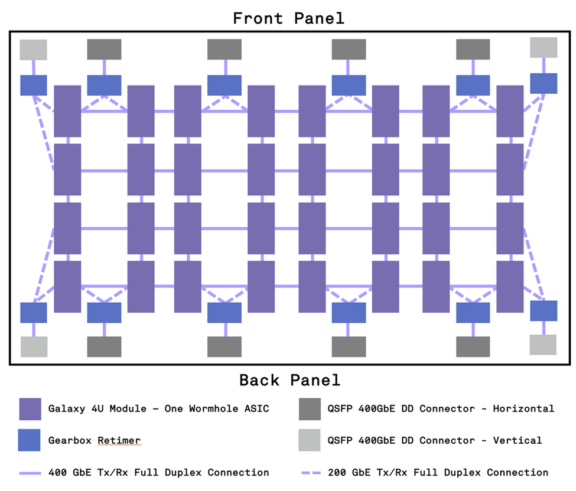
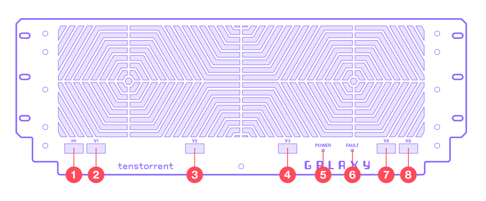
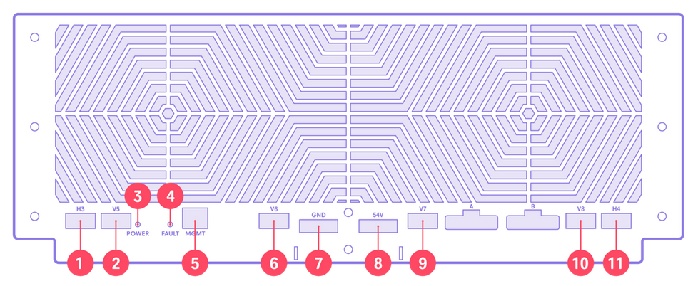

Specifications
Galaxy Wormhole 4U Server Specifications
Specification |
Single Galaxy Module |
Full Galaxy Wormhole 4U Server |
|---|---|---|
Part Number |
- |
TG-00001 |
AI Graph Processor(s) |
Tenstorrent Wormhole™ |
32x Tenstorrent Wormhole™ |
Galaxy Modules |
1 |
32 |
Tensix Cores |
80 |
2,560 |
AI Clock |
1 GHz |
1 GHz |
TeraFLOPs (FP8) |
292 |
9,322 (9.3 PetaFLOPs) |
SRAM |
120MB (1.5MB per Tensix Core) |
3.8GB (120MB per Module) |
Memory |
12GB GDDR6 (192-bit memory bus, 12 GT/sec) |
384GB GDDR6, globally addressable |
Power |
200W |
7.5 kW |
System Interface |
3.2 Tbps Ethernet (16x 200 Gbps) |
41.6 Tbps Ethernet Internal Connectivity |
Cooling |
Passive |
6x 120mm Fan |
Board Management Controller (BMC) |
- |
IMX8 |
Weight |
- |
130 lbs. / 59 kg |
Galaxy Wormhole Power Supply Specifications
Tenstorrent Galaxy Wormhole 4U Servers are shipped with one (1) Galaxy Wormhole Power Supply containing six (6) Murata MWOCP68-3600-B-RM Power Supply Modules for every two (2) Galaxy Wormhole 4U Servers. The data sheet for the Murata Power Supply Module can be downloaded from Murata in PDF form here.
Under peak load of two (2) Galaxy Wormhole 4U Servers, the Galaxy Wormhole Power Supply will only require five (5) of the individual power supply modules. In practice, this makes the Galaxy Wormhole Power Supply a 5+1 redundant power supply, though most customer configurations can likely handle two or more supplies failing without bringing down the Galaxy Wormhole 4U Server(s). The power supply modules are also hot-swappable.
Board Management Controller (BMC)
The Board Management Controller (BMC) utilizes a single IMX8 module mounted to the bottom side of the motherboard PCB. There must be allocation on the user’s network for an IP address associated with the module and it should be connected to the same network as the rack management software.
The BMC can report the following system parameters:
Power per Galaxy Module
Individual power reports from internal power modules
Temperatures across Galaxy Wormhole 4U Server
Fan Speed
High-Speed Interconnectivity

Each Galaxy Module is connected via four (4) 100GbE Ethernet links to adjacent Galaxy Modules. Modules close to the front and back panels have two (2) 100GbE connections to the QSFP-DD Ethernet ports, enabling connectivity to other Galaxy Wormhole 4U Server systems or the Host Computer within or outside of the rack.
Front I/O

Description |
|
|---|---|
1, 8 |
QSFP-DD 400GbE connectors for horizontal connection to a system in an adjacent rack |
2, 3, 4, 7 |
QSFP-DD 400GbE connectors for vertical connection to a system inside the same rack |
5 |
LED indicator for Power Up |
6 |
LED indicator for Fault |
Rear I/O

Description |
|
|---|---|
1, 11 |
QSFP-DD 400GbE connectors for horizontal connection to a system in an adjacent rack |
2, 6, 9, 10 |
QSFP-DD 400GbE connectors for vertical connection to a system inside the same rack |
3 |
LED indicator for Power Up |
4 |
LED indicator for Fault |
5 |
RJ45 connector to BMC module |
7, 8 |
GND and 54V bus bars |
Package Contents
Tenstorrent Galaxy Wormhole 4U Servers are shipped palletized with one (1) Galaxy Wormhole Power Supply for every two (2) Galaxy Wormhole 4U Servers.
Galaxy Wormhole 4U Server
Each Galaxy Wormhole 4U Server box contains:
One (1) Galaxy Wormhole 4U Server system
Two (2) rack shelves
Four (4) 2 ft. / 0.6 m QSFP-DD 400GbE cables
One (1) accessory box containing:
20 M6x16 Torx T30 screws (2 spare)
20 M6 cage nuts (2 spare)
Galaxy Wormhole Power Supply
Each Galaxy Wormhole Power Supply box contains:
One (1) Galaxy Wormhole Power Supply populated with:
Six (6) Murata MWOCP68-3600-B-RM Power Supply Modules
Two (2) rack shelves
Six (6) 6 ft. / 1.8 m C19-to-C20 power cables
Two (2) insulated PSU upper bus bars
One (1) insulated PSU lower bus bar, black
One (1) insulated PSU lower bus bar, red
One (1) upper bus bar cover
One (1) lower bus bar cover
One (1) Tenstorrent cosmetic cover
One (1) accessory box containing:
20 M5x10 T25 Torx screws (2 spare)
18 M5 Belleville washers (2 spare)
12 M6x16 T30 Torx screws (2 spare)
12 M6 cage nuts (2 spare)